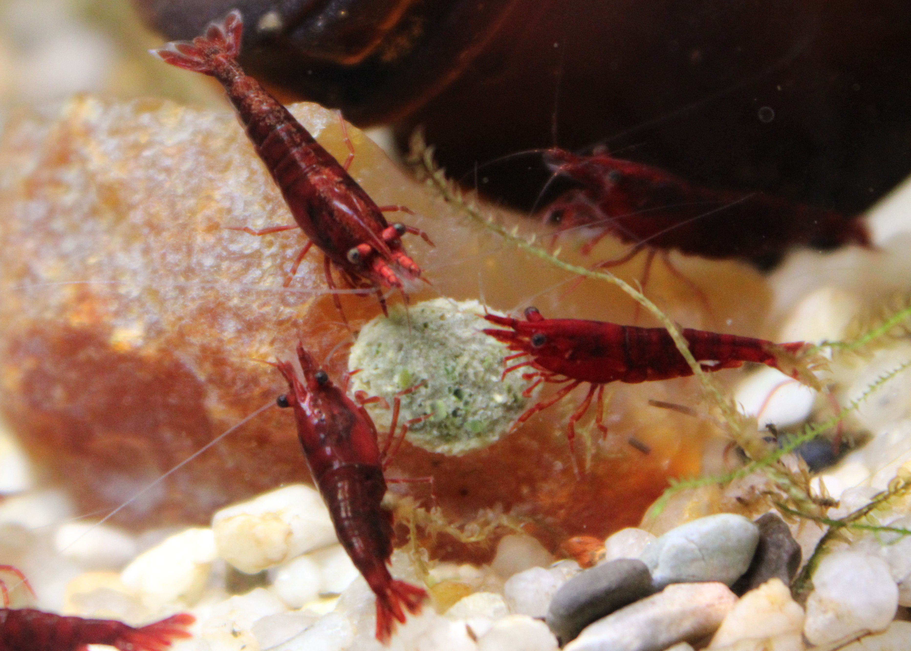
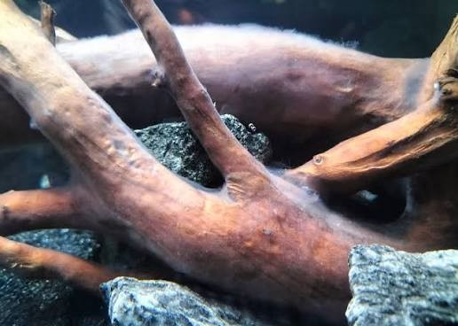

Feeding Your Shrimp
Feeding Neocaridina shrimp is simple, and the most common mistake is doing too much of it. Shrimp are tiny scavengers with low appetites, and in a healthy tank they graze constantly on their own. This page covers what to feed, how much, how often, and why less is usually more.
They Are Always Grazing
Before you ever drop in food, understand that your shrimp are eating all day. They constantly pick at biofilm, algae, and bits of organic matter on every surface in the tank. Biofilm is the thin, almost invisible microbial layer that coats plants, glass, substrate, and decor. It is one of the most natural and complete foods a shrimp can eat. Any food you add is a supplement to this constant grazing, not their main meal.
The Risks of Overfeeding
Overfeeding is a very common beginner mistake, and it is dangerous for a simple reason: shrimp eat very little, so most extra food goes uneaten. That leftover food rots, and as it breaks down it releases ammonia and feeds harmful bacteria in the water. A sudden spike can stress or even kill a colony. Uneaten food can also fuel outbreaks of pest snails and planaria. When in doubt, feed less.
What to Feed

Neocaridina are omnivores and are not picky. A simple, varied diet of small amounts works well:
- Shrimp pellets: the core supplement, formulated with the protein and minerals shrimp need. Feed only a small piece at a time.
- Algae wafers: plant-based food that mimics the algae shrimp graze on naturally. Break off a small piece rather than dropping a whole wafer.
- Blanched vegetables: zucchini, spinach, kale, and peas are all popular. Boil briefly to soften, let cool, and remove any uneaten pieces after a couple of hours.
- Calcium / mineral supplements: shrimp need minerals to molt and build their shells. A mineral supplement or a remineralized tank helps with healthy molting.
- Occasional protein: a rare pinch of something like bloodworm can be offered as a treat, but protein should be infrequent.
Recommended Products
Plenty of brands work well, and you do not need anything fancy. Some commonly recommended shrimp foods and supplements include Fluval Bug Bites Shrimp Formula, Hikari, Aqueon and Xtreme shrimp pellets, and Bacter AE, a powdered supplement that promotes biofilm growth.
How Often to Feed
There is no single correct schedule, because it depends on your tank. A mature, planted tank full of biofilm needs far less supplemental food than a newer, sparser one. As a rough starting point, many keepers feed a small amount every two to three days in an established tank, and slightly more often in a newer tank. The best way to find your tank's frequency is to watch your shrimp and your food:
- Feed a small amount and watch how quickly the shrimp finish it.
- If the food is gone within two to three hours, that portion is about right.
- If food regularly sits uneaten, you are feeding too much — cut back the amount or the frequency.
- Always remove uneaten food after a few hours so it does not foul the water.
Driftwood & Biofilm

Adding driftwood to your tank is one of the easiest ways to keep your shrimp fed naturally. New driftwood develops a layer of biofilm as it sits in water, often appearing as a white, fuzzy film that shrimp will graze on eagerly for hours. Botanicals such as Indian almond (catappa) leaves and alder cones do the same thing, releasing tannins and growing biofilm that shrimp love. These additions help create the kind of tank where shrimp can feed themselves between supplemental meals.
Can You Run a "No-Feed" Tank?
You may read about keepers who never feed their shrimp at all, relying entirely on the biofilm and algae in a mature, heavily planted tank. This is genuinely possible, and some experienced hobbyists argue shrimp can do very well this way, since uneaten food is such a common cause of water problems. However, it only works in a well-established tank with a thriving biofilm and algae population, which usually takes many months to develop. For a beginner with a newer tank, relying on no feeding at all is risky, so light supplemental feeding is the safer approach until your tank is truly mature.